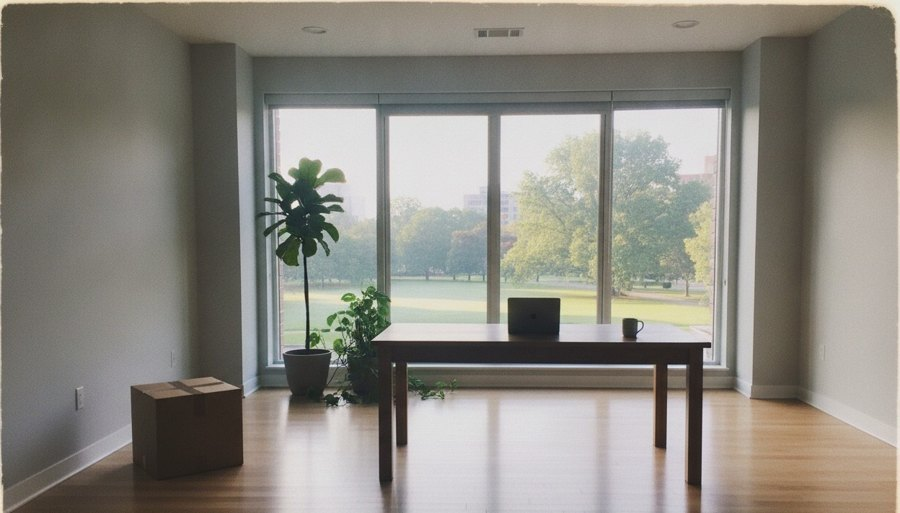

Nobody has counted. Here is what psychology measured instead, what a character's file needs, and a simulator to test your own numbers.
“I could give you twenty reasons for the way I work. Three of them matter.”CLARA MERCIER · IF YOU ASKED HER
COF · CHARACTER OPEN FILE
COF 1.2 gives AI characters a psyche: values, beliefs, wants, needs, fears, wounds, each a node with a weight, a date and a reason, tied to the memories that made it. The obvious question is how many of them a character needs — and how many a person has. This page starts with one refusal, follows it down to where it comes from, then says what the research does and does not know, lets you test your own numbers, and is honest about the popular shortcuts.
nonestudies that count the convictions of one person: psychology measures dimensions, not lists
10 → 19basic human values in Schwartz's theory, recognised across cultures
≈ 4,500English words for stable traits, found in the dictionary in 1936
50 – 150nodes for a main character written with care — our estimate, to be argued with
Orders of magnitude, not measurements. Every figure on this page says where it comes from.
Why did she say no?
Clara is a fictional designer from Lyon, the example character of the COF format. A prospective client writes to her. Here is the exchange — invented for this page, but played from her file. Then ask her why, as many times as it takes.
clientCould you ship our whole new site by Friday? Autoplay video on the home page, a chat bubble, push notifications — the works.
ClaraNo. Not like that. I can give you a lighter site by Friday, or this one in a month. But I won't ship something heavy and fast again.
1
No notifications
taste · strength 60 · settled · valence -80
Hates notifications and interfaces that blink at you.
The first answer is a taste: what she cannot stand. Strong, and quick — but a taste alone would only make her grumble, not refuse.
2
Lightness
value · strength 95 · core · since age 28
Lightness: do less, better — a page should cost the planet and the reader as little as possible.

Under it, a value, at the core of who she is. This is what turns a dislike into a no. It has a date, 28 — and two reasons.
3
The agency years
wound · strength 85 · core · since age 24
Four years of shipping heavy interfaces too fast, for clients who never saw the users.
The first reason is a wound. Four years she does not tell as a story, but that shapes how she works.
4
The agency years
memory · a period · age 24–28
Four years at a digital agency in Lyon, from 24 to 28: heavy interfaces shipped too fast, late nights of testing, and the slow conviction that the web could be lighter.
And under the wound, the memory itself. Here the chain ends: not in an adjective, in a life.
5
If I slow down, I disappear
belief · strength 60 · shifting · since age 24 · until about 45 · unaware — she never says it · false, but held
If I slow down, I disappear.
One more layer, which she could not give you herself. Clara believes, without knowing it, that if she slows down she disappears. It is why she offers the faster option first, and why she works at night. An agent reading the file plays it — in what she does, never in what she says.
✓
Five questions, from a sentence to four years that began at twenty-four.
Every answer above is a node of Clara's file, linked to the next — supports, because — written once by her author, readable by any tool, the same in every model that plays her. Nothing here was improvised.
Five nodes answered. Clara's file holds 23, with 31 links between them and to her memories. Is that a person? Clearly not all of one. So how many would it take?
How many? What has been counted
No study has counted the convictions of a person, and none could: “a conviction” is not a unit the mind keeps. What psychology has counted is the number of dimensions it takes to describe how people differ. Those numbers are small, and they are the closest thing to an answer.
Values: a few dozen at most
Milton Rokeach separated beliefs, attitudes and values, and argued that a person holds far fewer values than attitudes: values are the few central beliefs the rest are organised around. His survey asks people to rank 36 of them, 18 ends and 18 means (Rokeach, 1973). Shalom Schwartz then proposed ten basic values recognised across cultures — security, benevolence, achievement and the rest — arranged in a circle of compatible and conflicting motivations, and tested the structure in twenty countries (Schwartz, 1992); the refined theory distinguishes nineteen, confirmed in fifteen samples from ten countries (Schwartz et al., 2012). A person is not ten values: a person is an order among them. That is why COF's value nodes carry a strength, and why the RFC names Schwartz's list as an optional vocabulary, never as a form to fill.
Traits: thousands of words, five dimensions
The lexical hypothesis holds that whatever matters in how people differ ends up as a word. Gordon Allport and Henry Odbert went through Webster's dictionary — about 400,000 entries — and kept 17,953 terms that describe personality or behaviour, 4,504 of them for stable traits (Allport & Odbert, 1936). Decades of factor analysis condensed that vocabulary into five broad domains — the Big Five — which the standard questionnaire measures through 30 facets, six per domain, with 240 items (Costa & McCrae, 1992). And when sociologists asked people simply to answer “Who am I?”, they gave them twenty lines to fill (Kuhn & McPartland, 1954) — a format, not a ceiling, but a telling one.
The Big Fivefive broad domains of personality5
Basic human valuesSchwartz 1992: ten · 2012: nineteen10–19
“Who am I?”the Twenty Statements Test asks for twenty20
Clara, as writtenexample 10 of the format · 23 nodes23
Facets of the NEO PI-Rsix under each of the five domains30
The Rokeach Value Survey18 terminal + 18 instrumental values36
A main character, written with careour estimate50–150
A whole life, modelledour estimate, with what began and ended300–600
The upper bound we testedthe tools still draw it1,000
English words for stable traitsAllport & Odbert 1936, “column I”4,504
English words about personalityAllport & Odbert 1936, all four columns17,953
1101001 k10 k100 k
What has been counted, on one logarithmic scale — not counts of the same thing: dimensions to describe everyone, items of a questionnaire, words of a language, and in violet COF's own numbers. The range of a novel's or a life's psyche sits between what a questionnaire asks and what a dictionary holds.
Three levels, and where a psyche sits
Dan McAdams answered the question “what do we know when we know a person?” with three levels (McAdams, 1995; McAdams & Pals, 2006). Traits, broad and context-free: the Big Five, which give the “psychology of the stranger”. Characteristic adaptations: goals, values, concerns, coping strategies, tied to a time, a place, a role. And narrative identity: the evolving story a person makes of their life, joining the remembered past to the imagined future (McAdams & McLean, 2013).
COF's psyche lives on the second and third levels. Traits stay where they were in 1.0, an optional annex of scores. A node is a characteristic adaptation — a want, a fear, a stance toward someone — and its because link to a memory is a piece of the life story. Memory research describes the same two-way tie: in Martin Conway's self-memory system, what we remember is selected and shaped by the goals of the current self, and the self in turn is grounded in what we remember (Conway & Pleydell-Pearce, 2000; Conway, 2005). Memories without a psyche stay anecdotes; a psyche without memories stays slogans.
What writers count
Fiction has its own counts, and they are small at the core. John Truby builds a character on a weakness and a need the hero does not see, a desire the hero pursues, and often a ghost — “the event from the past still haunting the hero in the present” (The Anatomy of Story, 2007). K. M. Weiland adds the lie the character believes, formed by that ghost and undone by the story (Weiland, on want and need; ghost, wound, lie, weakness). One wound, one lie, one want, one need: four nodes carry an arc. COF has a kind for each — wound, belief marked false but held, want, need — and everything a novelist knows besides: the tastes, habits, stances that make a character recognisable in a scene where the arc is not at stake.
And it moves
A person's psyche is not a snapshot. A meta-analysis of 92 longitudinal samples found that personality traits keep changing through adulthood, most between twenty and forty, some into old age (Roberts, Walton & Viechtbauer, 2006). And more than 19,000 people, asked about their personality, their values and their preferences, recalled a lot of change over the past ten years and predicted little over the next ten, at every age — the end of history illusion (Quoidbach, Gilbert & Wilson, 2013). That is why a node has a since and an until, and why a conviction that changes leaves its earlier self in the file.
Our estimate
So there is no number to take from the literature, only bounds: a handful of dimensions to describe anyone, a few dozen values at most, thousands of words for the rest. Here is ours, from building Clara and from load tests of the tools — an estimate, labelled as one.
23
Clara today: enough for an agent to play her consistently, and to answer why.
50 – 150
a main character written with care: what a novelist would know about her.
300 – 600
a whole life modelled, with what began and ended along the way.
1,000
the upper bound we tested: the tools still draw it, a conversation never needs it all.
Test your own
Every assumption is a control. The presets reproduce the estimate above; Clara's is fitted on her file — 23 nodes written by hand, 21 held at 65, two let go at forty-five. Change any of it.
Convictions held now
–nodes
–
–in the file, unpacked
–tokens to read all the held ones, as text
–tokens per turn
–can say why down to a memory
heldlet go, in allClara, as written
What it weighs
What it costs a model to read
Logarithmic scales. 1 KB = 1,000 bytes. Expected values of a simple model, not a measurement of anyone: hover or focus the chart and use the arrow keys to read it year by year.
Two things stand out whatever the settings. The file stays small: a thousand convictions in two languages weigh under a megabyte — three pictures like the one of her wedding, a seventeenth of her file. And what a model must read per turn barely moves: an agent picks the core nodes and the handful the moment calls for — by tag, by the person or memory the conversation touches, by strength — and leaves the rest on disk. Size is not the constraint; writing them is.
Popular profiles: what they are worth
Many authors do not start from a blank page but from a type: “she's an INFJ”, “a Four”, “very open, not very agreeable”, “a Virgo”. COF's tools take all four as starting points. Their scientific standing is very different, and it is worth saying so plainly — without contempt for anyone who finds them useful. A shorthand that helps someone think about a character is doing a job.
The Big Five
The five domains that came out of the dictionary — openness, conscientiousness, extraversion, agreeableness, neuroticism — are the best-validated model in personality psychology. They are scores, not boxes: everyone is somewhere on each. Their links to what happens in a life hold up: a large replication of 78 published associations between traits and life outcomes reproduced about 87 % of them, though usually with smaller effects than first reported (Soto, 2019). Their limit, for a character, is that they say how much, never about what: a high neuroticism score does not say what she is afraid of.
Myers-Briggs types
Four letters for sixteen types, from Jung's theory, hugely popular in workplaces and online. Research finds that the four scales behind the letters measure something real — four of the five Big Five domains — but not types: the scores are not bimodal, they do not split people into two camps on each scale (McCrae & Costa, 1989). Near the middle a letter is decided by a few answers, and it often flips: among people with intermediate scores, a quarter to a third got the other letter on a given scale when retested a month later (Howes & Carskadon, 1979, reviewed by Pittenger, 2005). A four-letter type is a less stable summary than the scores beneath it.
The Enneagram
Nine types, each defined by a basic fear and a basic desire, widely used in coaching and spiritual direction. A systematic review of 104 samples found mixed evidence of reliability and validity: some subscales relate to the Big Five in the expected ways and several studies report that people find it helpful for personal growth, but factor analyses usually recover fewer than nine factors, and little supports the wings and movements between types (Hook et al., 2021).
Astrology
A sun sign is the oldest personality shorthand there is. In controlled tests it has no predictive power. In a double-blind experiment published in Nature, astrologers matched birth charts to one of three personality profiles from a standard questionnaire, and got it right about one time in three — what chance gives (Carlson, 1985). A review of more than forty controlled studies found astrologers doing no better than chance, and people born minutes apart showed none of the similarities astrology predicts (Dean & Kelly, 2003). One finding matters for a character, though: the sign can still shape the person. In a sample of 2,324 adults, people born under the odd-numbered signs scored as more extraverted on a standard questionnaire, just as astrology says (Mayo, White & Eysenck, 1978) — and the effect disappeared among people who did not know what their sign was supposed to make them (Eysenck & Nias, 1982). The horoscope had done the work: a belief about oneself, repeated, becomes behaviour. In a story, a character who reads hers every morning is a fact about her — a node, often aware: no, with a because on the habit.
what it gives
what the evidence says
what COF proposes from it
Big Five
five scores, 0–100: openness, conscientiousness, extraversion, agreeableness, neuroticism
the best-validated model in personality psychology; links to life outcomes largely replicate
a score of 70 or more, or 30 or less, proposes one or two candidates for that pole
Myers-Briggs type
four letters, sixteen types
the four scales track four of the Big Five; the types themselves are not well supported, and a letter near the middle often flips on retest
three or four common readings of the type: a value, a taste, a habit, a fear or a want
Enneagram
one type out of nine, with its basic fear and desire
mixed evidence of reliability and validity; the nine types are not recovered as nine factors
the basic fear, the basic desire, a value and a habit of the type
Astrology
a sun sign, twelve
no predictive validity in controlled, double-blind tests
three or four traits commonly attached to the sign
Only starting points
So COF uses all four the same way: as a proposal, never as a field of the format. Give the builder or cof psyche propose a sign, a four-letter type, an Enneagram number or five scores, and it offers a few ordinary nodes — strength 50, stability shifting, tagged with where they came from — every one unticked until the author reads it and decides. There is no “type” field to fill: millions of people share a sign or a type, and a type cannot say why. A person is a graph with reasons. The shorthand is a fine place to start the graph, and a poor place to stop.
Three ways to keep a mind
There are three ways to tell a model who a character is. A description: a few lines in a prompt. A graph: the psyche of COF, convictions linked to each other and to memories. Weights: a model fine-tuned on the character, or a LoRA — the character dissolved in a latent space.
a description
a graph
weights
what it holds
a portrait in a few lines
convictions, with weights, dates, reasons and the memories behind them
habits of speech, reflexes, a style no text pins down
can you read it?
yes
yes — node by node
no — millions of numbers
can you correct it by hand?
yes
yes, one node at a time
only by training again
can it answer why?
rarely — it improvises
yes, link by link
no — it can only act
can it keep a secret, or not know itself?
everything is on the page
open, guarded, secret; aware or not
not on purpose
does it move with time?
one snapshot
since, until, revisions
one training run
size
about a kilobyte
Clara: 12 KB for 23 nodes; a whole modelled life, a few hundred KB
tens to hundreds of megabytes
what it takes to make
writing it by hand
writing it by hand, or a tool that proposes and you tick
data, GPUs, hours of training
works with
any model
any model, today
one model family
Orders of magnitude, not measurements. The size of weights depends on the model and the method; the graph's on how much of the life is written.
The honest ranking is not a ladder. A graph is better than a description: it can be selected from, it answers why, it keeps secrets and moves with time. It is less rich than a latent space, which holds what no list of convictions can — the way a sentence turns, a hesitation, a kind of humour. But a graph is the only one of the three that anyone can make with a pen or a tool that proposes, read node by node, edit one conviction at a time, and carry to any model, today and in ten years.
Not instead of weights
Weights are richer, and nothing on this page competes with that. But they are mute about themselves: they can produce the no, never the why. You cannot read them, correct one conviction, keep one secret, or take them to another model.
So the two are not rivals. A graph is the score; weights are a performance of it. The score can be read, argued with, versioned, carried to any orchestra — and one day it can be what a model is tuned from, and what its performance is checked against. Until then, it is the only one of the three that you can write by hand tonight, and that every model can read tomorrow.
In practice the two work best together. Weights give the voice its grain; the graph gives it something to hold on to — buoys in a channel: the current does the moving, the buoys keep it from drifting. Prompt the graph into a model you fine-tuned on the same character, and each corrects the other's failure mode: the weights stop improvising convictions the file never gave, the graph stops reading like a list.
An open question: the score and the performance
That last sentence is a research question, and we would like someone to take it on. Can a psyche graph be the supervision signal for a character's weights — and can it be the evaluation set?
Each node already reads like a test. A core value with strength 95 predicts a refusal; a fragile stance predicts a change of mind within one conversation; a node marked aware: no predicts behaviour the character never names; a because chain predicts the answer to “why?”. So here is the study. Take a few dozen characters with authored graphs of a hundred nodes or so. Turn each node into situations — a client in a hurry, a friend who asks for help — with the expected behaviour derived from its kind, strength and stability. Then measure three things. Whether a model prompted with the graph behaves as the nodes predict, and how that degrades as only a selection of nodes is loaded. Whether an adapter trained on dialogue generated from the graph recovers the because chains when asked, without being shown them. And whether editing one node and retraining changes only the behaviours that node predicts, and nothing else. If the answers are good, the graph becomes what the reference images of a face already are for a LoRA in COF: the readable source a model is derived from, regenerated when the source changes.
Schwartz, S. H. (1992). Universals in the content and structure of values: theoretical advances and empirical tests in 20 countries. Advances in Experimental Social Psychology, 25, 1–65. doi:10.1016/S0065-2601(08)60281-6
Schwartz, S. H. et al. (2012). Refining the theory of basic individual values. Journal of Personality and Social Psychology, 103(4), 663–688. doi:10.1037/a0029393
Traits and the self
Allport, G. W. & Odbert, H. S. (1936). Trait-names: a psycho-lexical study. Psychological Monographs, 47(1). Summary: the lexical hypothesis.
Costa, P. T. & McCrae, R. R. (1992). NEO PI-R Professional Manual. Psychological Assessment Resources — description of the instrument.
Kuhn, M. H. & McPartland, T. S. (1954). An empirical investigation of self-attitudes. American Sociological Review, 19(1), 68–76. doi:10.2307/2088175
McAdams, D. P. & Pals, J. L. (2006). A new Big Five: fundamental principles for an integrative science of personality. American Psychologist, 61(3), 204–217. doi:10.1037/0003-066X.61.3.204
McAdams, D. P. & McLean, K. C. (2013). Narrative identity. Current Directions in Psychological Science, 22(3), 233–238. doi:10.1177/0963721413475622
Conway, M. A. & Pleydell-Pearce, C. W. (2000). The construction of autobiographical memories in the self-memory system. Psychological Review, 107(2), 261–288. doi:10.1037/0033-295X.107.2.261
Conway, M. A. (2005). Memory and the self. Journal of Memory and Language, 53(4), 594–628. doi:10.1016/j.jml.2005.08.005
Change
Roberts, B. W., Walton, K. E. & Viechtbauer, W. (2006). Patterns of mean-level change in personality traits across the life course: a meta-analysis of longitudinal studies. Psychological Bulletin, 132(1), 1–25. doi:10.1037/0033-2909.132.1.1
Quoidbach, J., Gilbert, D. T. & Wilson, T. D. (2013). The end of history illusion. Science, 339(6115), 96–98. doi:10.1126/science.1229294
Writing characters
Truby, J. (2007). The Anatomy of Story: 22 Steps to Becoming a Master Storyteller. Faber and Faber.
Soto, C. J. (2019). How replicable are links between personality traits and consequential life outcomes? The Life Outcomes of Personality Replication Project. Psychological Science, 30(5), 711–727. doi:10.1177/0956797619831612
McCrae, R. R. & Costa, P. T. (1989). Reinterpreting the Myers-Briggs Type Indicator from the perspective of the five-factor model of personality. Journal of Personality, 57(1), 17–40. doi:10.1111/j.1467-6494.1989.tb00759.x
Pittenger, D. J. (2005). Cautionary comments regarding the Myers-Briggs Type Indicator. Consulting Psychology Journal: Practice and Research, 57(3), 210–221. doi:10.1037/1065-9293.57.3.210
Hook, J. N. et al. (2021). The Enneagram: a systematic review of the literature and directions for future research. Journal of Clinical Psychology, 77(4), 865–883. doi:10.1002/jclp.23097
Carlson, S. (1985). A double-blind test of astrology. Nature, 318, 419–425. doi:10.1038/318419a0
Mayo, J., White, O., & Eysenck, H. J. (1978). An empirical study of the relation between astrological factors and personality. The Journal of Social Psychology, 105(2), 229–236. doi:10.1080/00224545.1978.9924119
Eysenck, H. J., & Nias, D. K. B. (1982). Astrology: Science or Superstition? Maurice Temple Smith, London. The self-attribution reanalysis: the sign–extraversion link holds only among people who know what their sign predicts.
Dean, G. & Kelly, I. W. (2003). Is astrology relevant to consciousness and psi? Journal of Consciousness Studies, 10(6–7), 175–198. ingentaconnect
Counting tokens
OpenAI Help Center, What are tokens and how to count them? — “1 token ≈ 4 characters in English”, the rule the simulator uses (the same as cof tokens without a tokenizer).
Measured on the format
Clara's psyche, spec/examples/10-clara-mercier, COF 1.2: 23 nodes, 12.0 KB of node files, 15.9 KB with their manifest entries, 31 links, 9 nodes tied to a memory; her « Who she is » as cof psyche text --preset en-agent renders it, 1,943 characters. The upper bound: generated psyches of 150, 500 and 1,000 nodes, opened in the explorer (load tests, 3 November 2026).
She said no because of four years she does not talk about. Now you know why. So does any tool that opens her file.